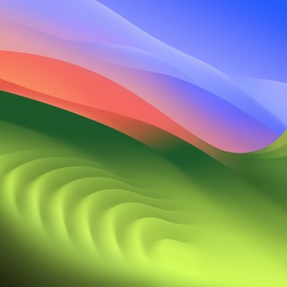

Colour
Two features for designers: a palette from an image, and a tonal scale from one colour. Both end on your clipboard: a hex with ↵, or the whole set with c, as swatches you paste into Figma. Every terminal frame is a real 80 × 24 terminal drawn with the decided kit, and live. The colours are real: the palette is taken from the Sonoma wallpaper, and the scale is built from its blue.
00What colour does
The first version. Everything takes a file or a value and gives back a value or swatches; nothing here needs a canvas to tweak on.
s on a palette colour. You get 50–950, built in OKLCH so the steps look even, with your colour at 500. r on any step makes it the new centre and rebuilds the scale.c copies the whole set as a card of swatches with labels. ⌘V in Figma makes real shapes and text, the layers named blue-500 and so on.forge palette photo.jpg and forge scale "#6579FD" print the same card into the scrollback; --json for scripts and agents..ase for Adobe apps, .clr for the macOS colour picker, CSS variables.forge contrast "#fff" "#6579FD", and the nearest colour that passes.★The whole flow
Colour mode as decided, one moment per frame, in order. C1: pressing 4 offers Palette or Scale on home. F1: the card at the top of each screen is its field. The palette starts from the drop zone, shows the photo in its own colours (D1), and → goes deeper into a colour. s makes a scale from a palette colour, with it at 500 (S9); r makes any step the new centre. ↵ copies one hex, c copies all, and ⌘V in Figma gives the F1 card. esc always goes back one step, and the bar's trail shows the way back. The steps (click to jump):
Or start from a colour
From home, → to Scale. The scale's card is its field, so it opens ready to type.
01Pressing 4
Colour is the fourth mode: 4, or /colour. It asks one thing, palette or scale, and what you type then belongs to that screen (tab 4). Two ways to ask:
Not taken: a drop zone and field on home (H1–H4)
Colour is the fourth mode: 4, or /colour. Half of it starts from a file (a palette from an image) and half from a value (a scale from a colour), so its home takes both. Nothing in colour mode writes a file, so the tab row says where results go: the clipboard. Each frame types #6579FD.
02Palette from an image
After you drop an image in colour mode. The photo it comes from:

Six colours, k-means in OKLab on a 96 × 96 copy: two greens and a lime from the hills, lavender and blue from the sky, coral from the band between. Each frame loops: it moves along the colours, copies one hex with ↵, and copies the whole set with c.
Picked: D1, the photo in its own colours, with going deeper
→ opens the chosen colour: the same grouping is run again on only its pixels, and you see the shades it is made of. ← goes back; ↵ still copies. The bar's trail says where you are: Palette ╱ #F26E69. Shades under 2% of their colour are dropped. Each frame loops: it opens the coral (12% of the photo), walks its four shades, copies one, goes back, and opens the blue.
Not picked: D2, D3, and rounds one and two (P1–P8)
Round one: P1–P3
Round two: P4–P8, with the shares
Each shows how much of the photo every colour covers. The percentages are whole numbers that add up to 100.
03Tonal scale from one colour
After you type a colour, or press s on one in a palette. Here the blue from the photo, #6579FD, which lands on 500. The steps share its hue, follow a fixed lightness ladder, and carry less chroma towards the ends; any step outside sRGB loses chroma until it fits.
Picked: S9, with make centre
S1's ramp, with a preview of the chosen step under it. r makes the chosen step the new reference: it goes to 500 and the scale is rebuilt around it. Here the reference always sits at 500, the colour you type as well, so "500" always means "my colour".
Not picked: S1–S8, S10, S11
04The field inside each screen
Each screen has its own field: the palette's takes an image (a path, or a file dropped on the terminal), the scale's takes a colour. Typing again switches to another, and the view follows the moment the value is whole. Typing #, / or ~, or pasting, goes into the field; other letters stay keys, so c and r still work. A colour typed on the palette makes a scale from it.
F3: home's field, for comparison
What colour mode looks like if it uses home's field, the › line under the drop zone, instead of turning the card into the field (F1, picked).
F1 (picked) and F2
Earlier: T1–T3
On the palette and on the scale you can type a colour and get its scale, with it at 500. Three ways to offer that, each drawn on both screens. Each frame loops: it types #E8B44C, presses ↵, and walks the new scale. esc goes back to where you were, and the bar's trail keeps it.
05The card that lands in Figma
What c (copy all) puts on the clipboard. Press Copy for Figma on any card, then ⌘V on a Figma canvas: these are the exact SVGs Forge would put on the clipboard. Each is shown as a light and a dark card, on a light and a dark canvas.
Not picked: F2, F3
06Fallbacks
After a pick: the chosen views in a terminal without true colour, and under NO_COLOR, where swatches cannot show at all.